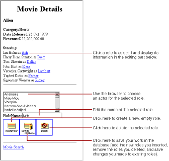

PATH
Documentation > WebObjects 4.5 >
Getting Started With WebObjects
Updating Objects in the Detail Display Group
In this section, you'll add the ability to insert, update, and delete movie roles. The MovieDetails page will then look something like this:

Many of the features in this page are similar to features in the Main page, but in this section you perform by hand the tasks the wizard performed for you to create Main. Already you've learned how to create a WODisplayGroup variable and how to bind it to dynamic elements. In this section you'll:
-
Write code to update a display group's selected object.
-
Create and configure a browser.
-
Create a custom enterprise object class.
-
Use display group actions to configure image buttons to insert, update, and delete.
© 1999 Apple Computer, Inc. – (Last Updated 24 Aug 99)